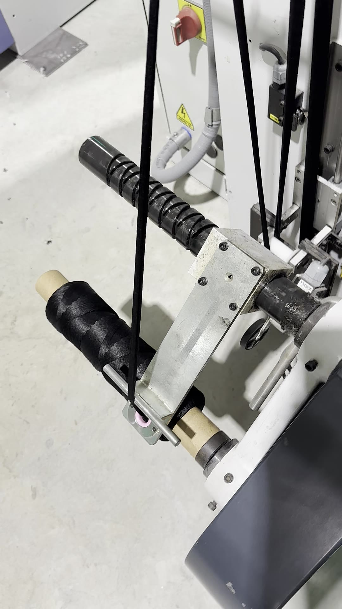
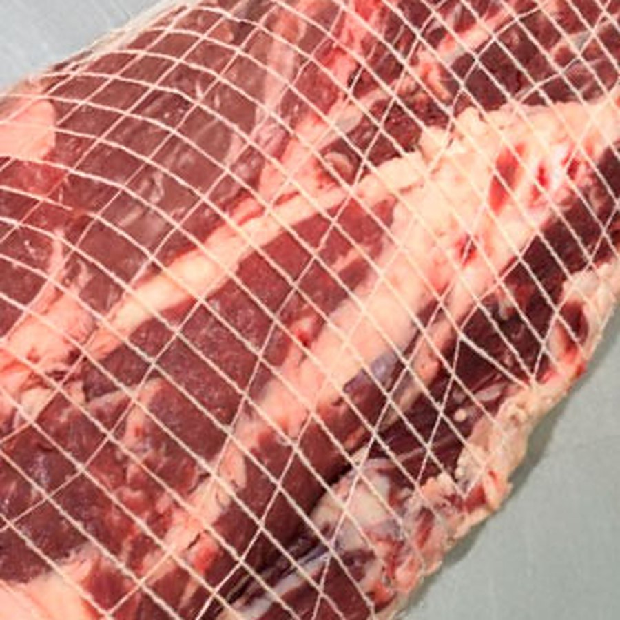
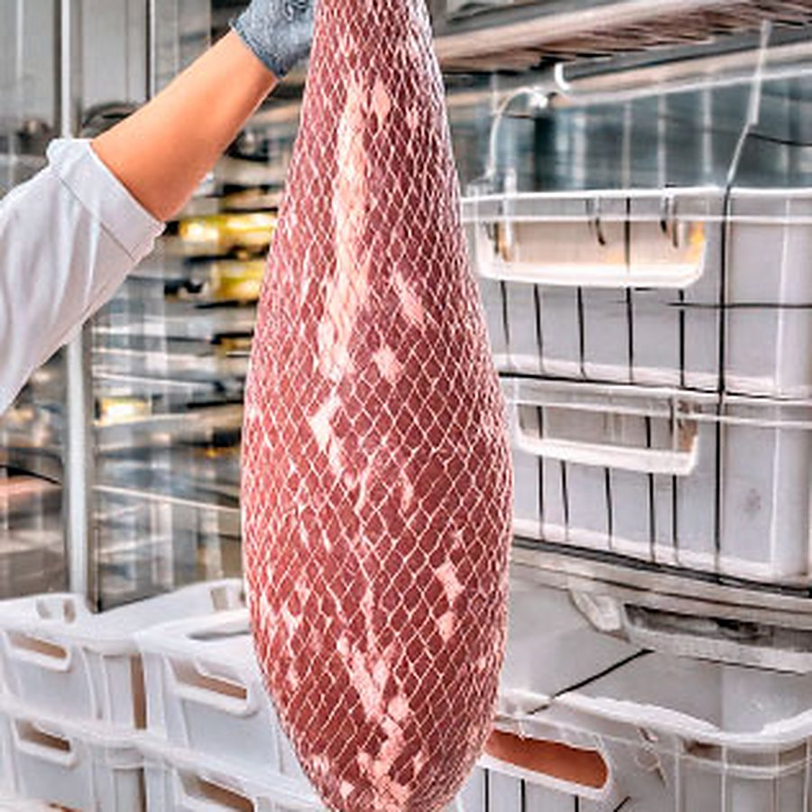

Redes para cortes kosher: huachalomo y roast beef
Elásticas y sin elastizar de cuadro ancho, para cortes con certificación kosher. Cuatro modelos con estiramiento máximo de 24 a 44 cm, para acompañar piezas de distinto tamaño.

- ±24 a ±44 cmestiramiento máximo
- 4 modeloscomún, U65, 34 y 44
- 20 cuadroselástica
- Cuadro anchoversión sin elastizar
Así queda
Piezas terminadas con nuestros insumos


Modelos y medidas
Elegí el modelo por el ancho máximo que alcanza la red estirada, de acuerdo con el diámetro de la pieza.
| Red | Ancho plano (cm) | Ancho máximo (cm) | Cuadros |
|---|---|---|---|
| Kosher común | 7,5 | 24 | 20 |
| Kosher U65 | 8 | 30 | 20 |
| Kosher 34 | 9 | 34 | 20 |
| Kosher 44 | 10 | 44 | 20 |
Elástica o sin elastizar
La versión elástica acompaña la merma de la pieza durante el proceso; la versión sin elastizar de cuadro ancho contiene sin comprimir. Las dos se tejen en nuestra planta con el hilado y el color que pidas.
Preguntas frecuentes
¿Qué modelo uso para huachalomo?
Depende del diámetro de la pieza: del Kosher común (hasta 24 cm estirada) al Kosher 44 (hasta 44 cm). Te mandamos muestras para probar en tu línea.
¿Vienen en rollo?
Sí, en rollos de 50 metros como el resto de las redes elásticas Enets®.